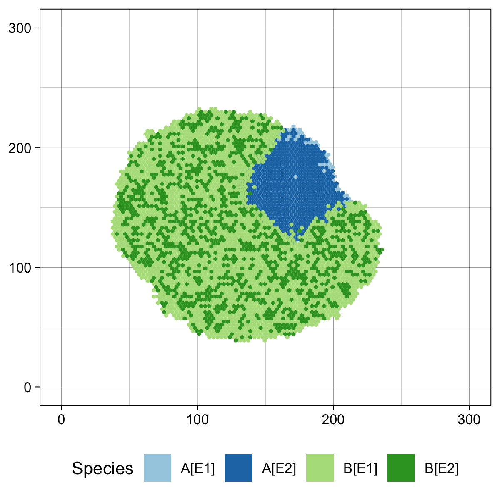
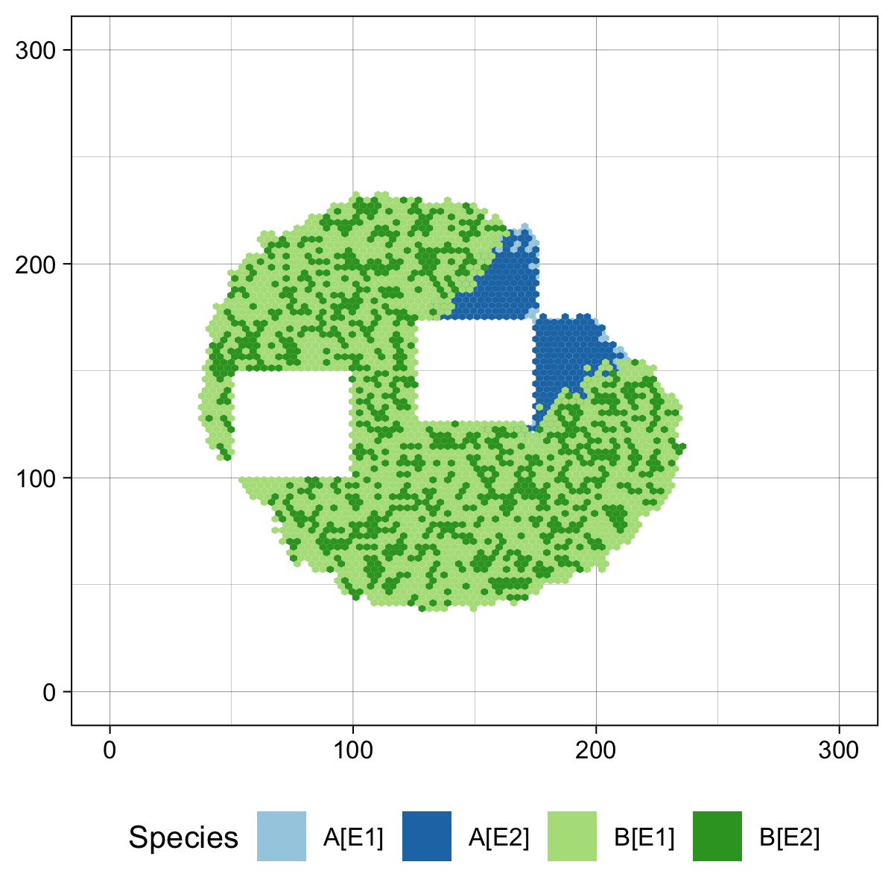
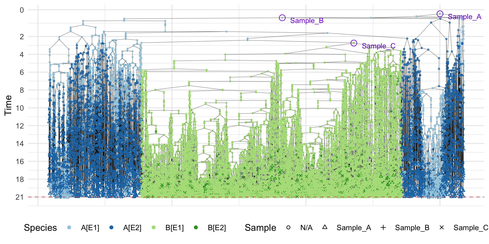

ProCESS stands for Programmable Cancer Evolution Spatial Simulator. It is an R wrapper for CLONES, a C++ tumour evolution simulator, and provides additional plotting functions.
Installation
In order to install the development version of ProCESS, you need:
the R package
pak
When the requirements have been satisfied, issue the R command:
pak::pak("caravagnalab/ProCESS@1.3")A Simple Example
Once ProCESS has been install, it can be loaded as follows.
Then, we can define a tissue model with 2 epigenetic states, E1 and E2, and 2 mutants, A and B, and let the model evolve until the number of cells in mutant B with epigenetic state E1 are less than 20k. The resulting simulated tissue can be sampled.
# set the seed of the random number generator for repeatability
set.seed(0)
# create a tissue simulation with two epigenetic states
sim <- TissueSimulation(epigenetic_states = c("E1", "E2"),
width = 300, height = 300)
# add a mutant "A" and set its species rates
sim$add_mutant("A", list(E1 = list(duplication = 2, death = 1, E2 = 0.12),
E2 = list(duplication = 0.8, death = 0.1, E1 = 0.12)))
# place one cell of "A" in epigenetic state "E1"
sim$place_cell("A[E1]", 150, 150)
# let the simulation evolve until the species "A[E2]" has less than 10 cells
sim$run_up_to_size("A[E2]", 10)
#>
[████████████████████████████████████████] 100% [00m:00s] Saving snapshot
# add a mutant "B" and set its species rates
sim$add_mutant("B", list(E1 = list(duplication = 3, death = 1, E2 = 0.12),
E2 = list(duplication = 1.3, death = 1, E1 = 0.12)))
# choose a border cell in "A" and let one of its progeny mutate in "B"
sim$mutate_progeny(sim$choose_border_cell_in("A"), "B")
# let the simulation evolve until the species "A[E2]" has less than 3000 cells
# avoid the progress bar
sim$run_up_to_size("B[E1]", 2e4, quiet = TRUE)
# plot the tissue
plot_tissue(sim)
plot of chunk tissue
# collect 3 samples: "Sample_A", "Sample_B", and "Sample_C"
sim$sample_cells("Sample_A", c(125, 125), c(175, 175))
sim$sample_cells("Sample_B", c(175, 175), c(225, 225))
sim$sample_cells("Sample_C", c(50, 100), c(100, 150))
# plot the tissue
plot_tissue(sim)
plot of chunk tissue
The collected samples can be used to build a sample forest whose nodes represent simulated cells. The forest can be plot and annotate.
# get the sample forest
sample_forest <- sim$get_sample_forest()
# plot it
plot_forest(sample_forest) %>%
annotate_forest(sample_forest)
plot of chunk forest
Finally, ProCESS can label each node in the forest by the genome of the corresponding cell and also simulate the DNA sequencing of the sampled cells.
For all the details about the above model and more advanced usage examples, please refer to